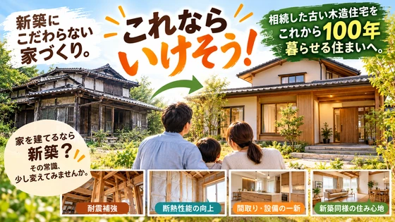
「これならいけそう！」新築にこだわらない家づくり。
RENOVATION & REUSE 相続した古い木造住宅を、 これから100年暮らせる住まいへ。 家を建てるなら新築？ その常識、少し変えてみませんか。 マイホームを考えたとき、多くの方が最初に思い浮かべるのは「新築住
続きを読む →FUJISOU AINOS JOURNAL
家づくりのこと、暮らしのこと。
日々の想いを、お伝えします。
家づくりについて 556件 ／ 新しい記事から 1・24ページ

RENOVATION & REUSE 相続した古い木造住宅を、 これから100年暮らせる住まいへ。 家を建てるなら新築？ その常識、少し変えてみませんか。 マイホームを考えたとき、多くの方が最初に思い浮かべるのは「新築住
続きを読む →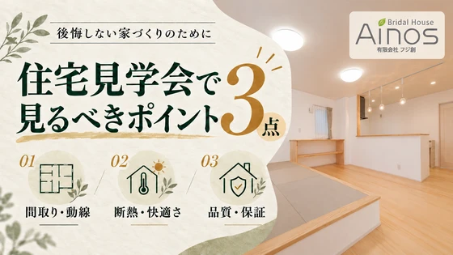
「住宅見学会に行ってみたいけれど、どこを見ればいいのかわからない」 「おしゃれな家を見るだけで終わってしまいそう......」 そんな方も多いのではないでしょうか。 マイホームは、人生の中でも大きな買い物です。 完成した
続きを読む →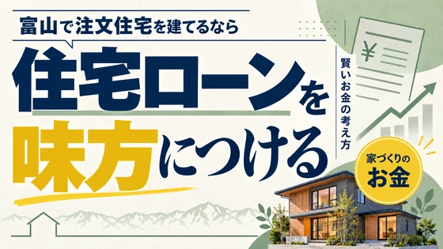
「住宅ローンは借金だから、できるだけ少なくしたほうがいい」 ...
続きを読む →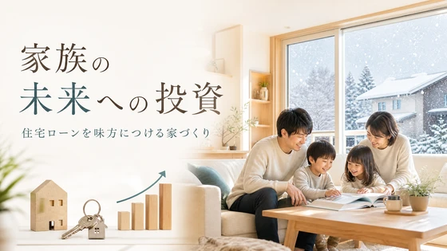
「住宅ローンは借金だから、できるだけ借りないほうがいい」 そう考えている方は多いのではないでしょうか。 確かに、住宅ロ...
続きを読む →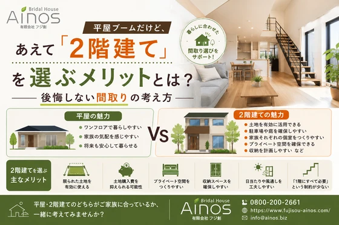
「最近は平屋が人気ですよね」 ...
続きを読む →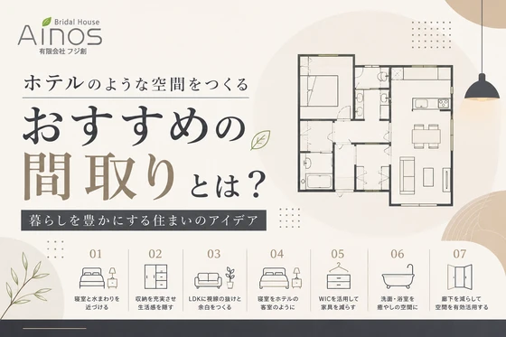
暮らしを豊かにする住まいのアイデア 「自宅にいながら、まるでホテルにいるような気分を味わいたい」 そんな住まいへの憧れ...
続きを読む →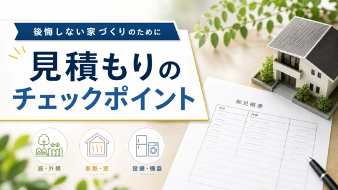
注文住宅を検討していると、複数の住宅会社から見積もりを取る機会があります。 その際、「同じ30坪くらいの家なのに500...
続きを読む →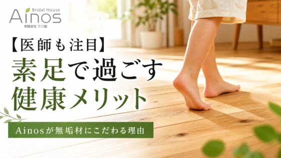
「家ではスリッパを履くのが当たり前」と思っていませんか？ 実は近年、足本来の機能を活かすために、家の中ではあえてスリッ...
続きを読む →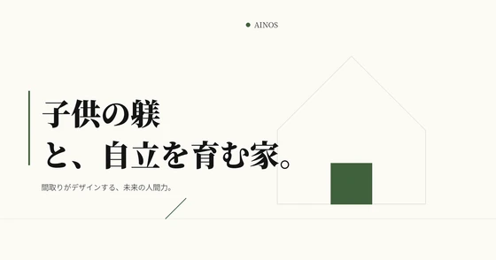
「子供には、自立した立派な大人になってほしい。」 これは多くの親が願うことではないで...
続きを読む →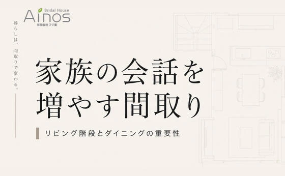
家づくりを検討している子育て世代の方なら、一度は考えたことがあるの...
続きを読む →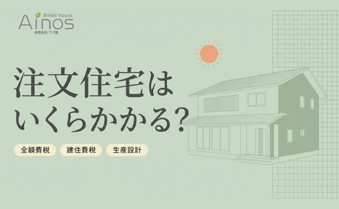
注文住宅はいくらかかる？ 家づくりの価格の考え方を分かりやすく解説 家づくりを考え始めたとき、多くの方が最初に気になるのが 「注文住宅はいくらかかるのか？」ということだと思います。 しかし住宅の価格は、土地・建物・設備・
続きを読む →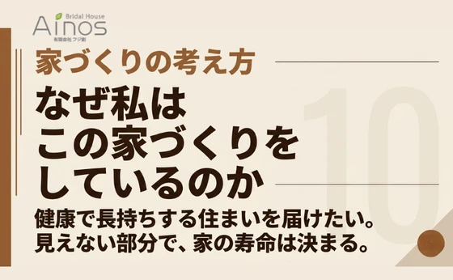
なぜ私はこの家づくりをしているのか 健康で長持ちする住まいを届けたい 家づくりは人生で一番大きな買い物です。 しかし住宅業界を長く見ていると、 「本当にお客様のための家づくりがされているのだろうか」 と疑問に感じることが
続きを読む →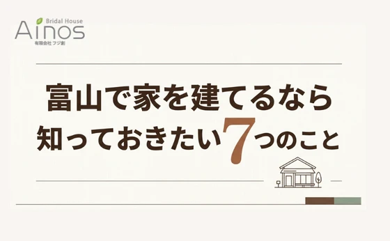
後悔しない家づくりのためのポイント 富山で家づくりを考え始めたとき、多くの方が最初に悩むのが 「何から始めればいいの？」ということです。 住宅展示場へ行くべきなのか、土地を探すべきなのか、住宅会社を探すべきなのか...。
続きを読む →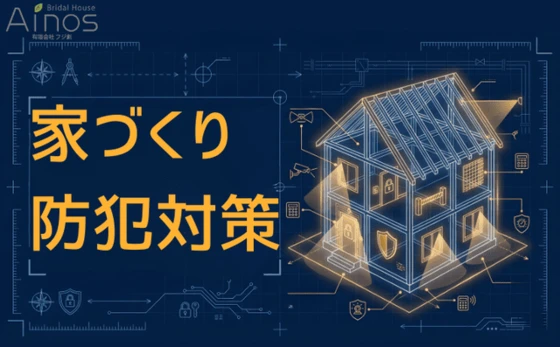
新築住宅でも空き巣被害は起きています。 「新築だから防犯は大丈夫」 実はこの考え方、とても危険です。 警察庁のデータでも、戸建住宅は空き巣被害の上位。しかも狙われやすいのは、 新興住宅地 周囲がまだ空き地の多い分譲地 共
続きを読む →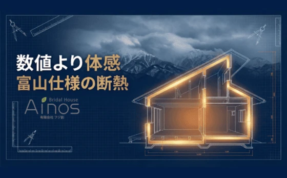
本当に暖かく、光熱費がかからない家の見極め方 富山で家づくりを考えると、 断熱性能は必ず話題になります。 「断熱等級７で最高値です」 「UA値も北海道仕様で安心です」 こうした説明を受ける方も多いでしょう。 しかし、富山
続きを読む →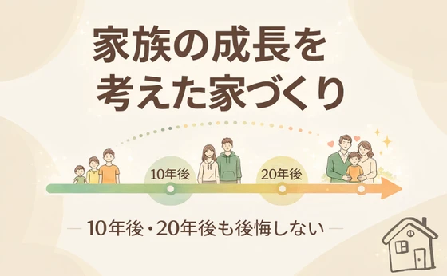
「家族の成長を考えた家づくり」10年後・20年後も後悔しない住まいとは？ はじめに｜「今ちょうどいい家」が将来もいい家とは限らない 家づくりを考えるとき、多くの方が 「今の家族構成」「今の生活スタイル」を基準に間取りや広
続きを読む →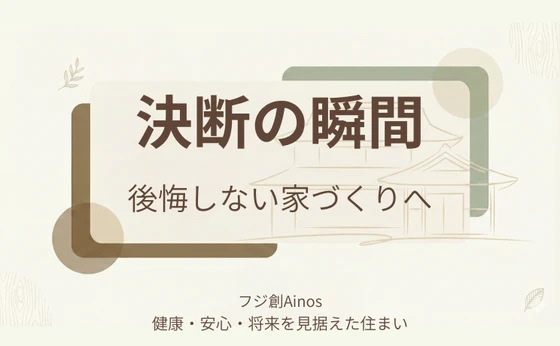
私たちフジ創Ainosが考える「住宅を建てたい人が決断する瞬間」 家づくりを考え始めた多くの方が、こんな気持ちを抱えています。 「まだ決めきれない」 「本当にここで建てていいのだろうか」 それは決して優柔断だからではあり
続きを読む →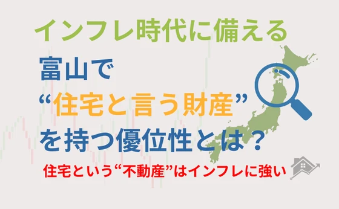
近年、日本全体で物価上昇が続き、富山でも食料品・光熱費・生活用品の値上げが止まりません。 「この先の家計が不安...」と感じる方も増えています。 こうしたインフレ時代にこそ見直したいのが、富山で家を建てる・買うという選択
続きを読む →
こんにちは。 富山県で自然素材にこだわった家づくりをしている 「フジ創アイノス」です。 今日は10月11日火曜日。 天候は、曇り空に時々雨です。 気温は、肌寒いです。 今日も体調管理に気をつけましょう。 本当に、秋になり
続きを読む →
こんにちは。 冨山で自然素材にこだわるホンモノの家造り、『フジ創アイノス』です。 今日8月23日は暦の上で処暑で、厳しい暑さも峠を越して朝夕涼しい風が吹き、 これを境に暑さも和らいでいく日だそうです。 それでも今日はまだ
続きを読む →
こんにちは、富山県で自然素材にこだわった家づくりをしている「フジ創アイノス」です。 最近フジ創アイノス、ホームページから「漆喰の秘密」の小冊子請求が沢山あります。 秘密と言えば何なのか知りたいですよね 住宅会社の９０％は
続きを読む →
こんにちは 富山で自然素材の本物の注文住宅にこだわる 「フジ創アイノス」です。 注文住宅で一番気になることがキッチンです。 最近はご夫婦でキッチンに立たれるご夫婦が増えていますが 私の様に昭和のベビーブームに生まれたもの
続きを読む →こんにちは。 冨山で自然素材にこだわるホンモノの家造り、『フジ創アイノス』です。 住宅に関連する検索キーワードで結構上位にランクされているものに一級建築士があるようです。 検索をされている方は、一級建築士の何に対して検索
続きを読む →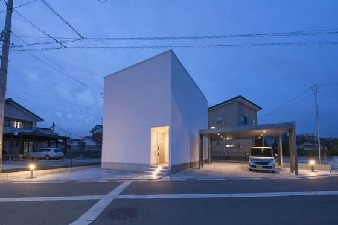
富山県で自然素材の注文住宅を造っているフジ創アイノスです。 昨日非常に残念でショックな事件が起きました。 安倍元首相が銃撃され、命を落とされたことです。 どんな理由があるにせよ、自分の意に沿わない人を抹殺するなんて 平和
続きを読む →